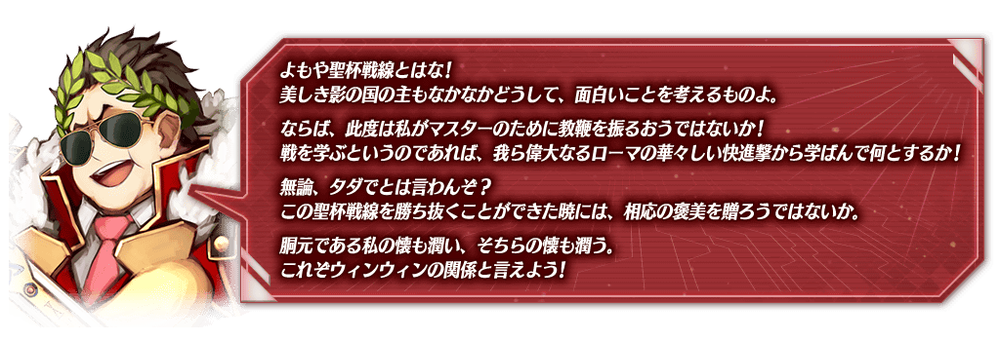
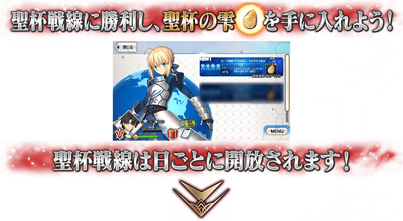
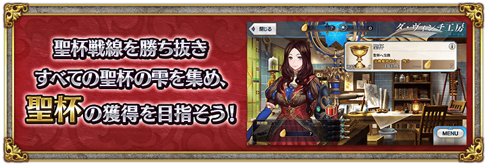
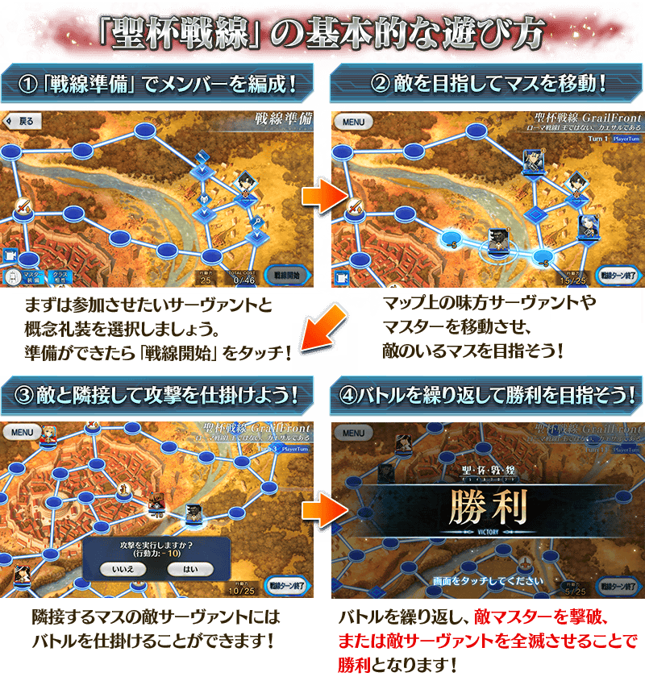
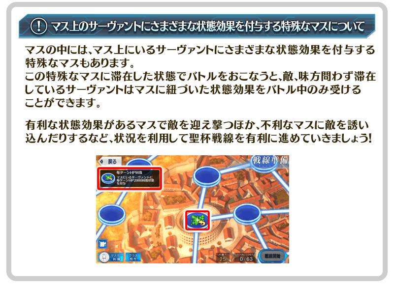
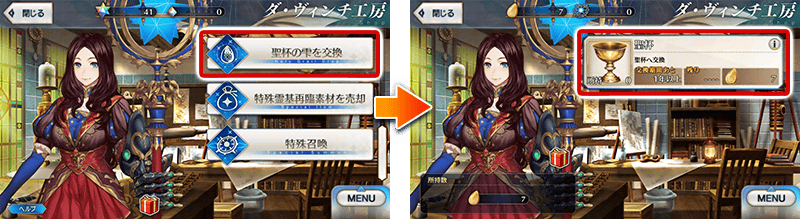
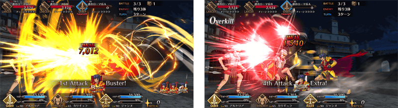

聖杯戰線再臨！舉辦期間限定活動「聖杯戰線 ～還有你嗎，布魯圖斯～」！
本活動中，會逐日開放分成敵我方的御主與從者，於専用的戰鬥場地反覆戰鬥，爭奪勝敗。的「聖杯戰線」
本活動中，區分敵我方御主和從者，在專用的戰鬥場地展開戰鬥，競爭勝敗的「聖杯戰線」「聖杯戰線」將逐日開放。
勝利後可入手1個聖杯之雫，收集7個的話能交換聖杯，取勝所有的戰鬥，以聖杯的獲得為目標吧！
※本頁面皆為開發中圖片。會有與實際圖片相異的情況。
◆活動舉辦期間◆
2021年2月3日(三) 17:00～2月17日(三) 11:59
◆活動參加條件◆
滿足以下條件的御主才能參加
・通過「特異點F 炎上汙染都市 冬木」
從上次舉辦「聖杯戰線」的變更點
期間限定活動「聖杯戰線 ～還有你嗎，布魯圖斯～」的聖杯戰線中，關於自上次舉辦的期間限定活動「影之國的舞鬥會 ～貓咪與兔子與聖杯戰爭～」進行調整下述的內容。
・一部份的敵從者變成會裝備概念禮裝
聖杯戰線的戰鬥中，登場的一部份敵從者變成會裝備概念禮裝。
・聖杯戰線的戰鬥中，未經過後攻側回合就結束戰鬥的情況，狀態效果的剩餘回合數減算辦法變更
聖杯戰線的戰鬥中「先攻側對手全滅而未經過後攻側的攻擊回合就結束戰鬥」情況，防禦系狀態效果等一部份狀態效果的剩餘回合數不會減算並維持至下個戰鬥，變成就算「先攻側對手全滅而未經過後攻側的攻擊回合就結束戰鬥」情況，關於所有的狀態效果會經過1回合減算剩餘回合數。
・戰鬥結束時的延遲發動技能的技能發動時間點變更
聖杯戰線的戰鬥中，使用持有延遲發動技能的情況，原本是會在下個戰鬥開始時發動技能效果，變成在戰鬥結束時發動延遲發動技能的技能效果。
※上述是1回合就結束戰鬥情況的舉動。
・聖杯戰線的回合經過中，技能冷卻等待減算時間點變更
上次在玩家回合的結束時會減算技能冷卻等待，變成玩家回合的開始時減算技能冷卻等待。
 
本活動中，「聖杯戰線」將會逐日開放。
聖杯戰線是分成敵我方的御主與從者，於専用的戰鬥場地反覆戰鬥，爭奪勝敗。勝利後可入手聖杯之雫1個，收集7個的話能交換聖杯，取勝所有的戰鬥，以聖杯的獲得為目標吧！

【聖杯戰線開放時間表】
| 聖杯戰線開放時間 | 開放的聖杯戰線 |
|---|---|
|
2021年2月3日(三) 17:00～ 2月17日(三) 11:59 |
聖杯戰線 第一戰 |
|
2021年2月4日(四) 17:00～ 2月17日(三) 11:59 |
聖杯戰線 第二戰 |
|
2021年2月5日(五) 17:00～ 2月17日(三) 11:59 |
聖杯戰線 第三戰 |
|
2021年2月6日(六) 17:00～ 2月17日(三) 11:59 |
聖杯戰線 第四戰 |
|
2021年2月7日(日) 17:00～ 2月17日(三) 11:59 |
聖杯戰線 第五戰 |
|
2021年2月8日(一) 17:00～ 2月17日(三) 11:59 |
聖杯戰線 第六戰 |
|
2021年2月9日(二) 17:00～ 2月17日(三) 11:59 |
聖杯戰線 第七戰 |
※聖杯戰線可獲得的通過報酬、戰利品、御主EXP、魔術禮裝EXP、絆點數只限初次通過時。 ※聖杯戰線中發生的戰鬥不包含在任務的達成條件。 ※開放的聖杯戰線能以任意的順序遊玩。 ※敬請注意聖杯戰線開戰的情況，該戰鬥結束前無法「強化」「召喚」等聖杯戰線以外的事情(戰鬥的途中選擇「戰線脫離」也可回到聖杯戰線的選擇畫面，但聖杯戰線會重置)。 ※請注意選擇「戰線脫離」回到聖杯戰線的選擇畫面的情況，不會退回在聖杯戰線開始時消耗的AP。

【2月4日(四) 17:00追記】
自期間限定活動「聖杯戰線 ～還有你嗎，布魯圖斯～」，追加對格子上從者賦予各式各樣狀態效果的特殊格子。

在達文西工房新追加「聖杯之雫交換」！
「聖杯之雫交換」中，可用7個聖杯之雫交換1個聖杯。在聖杯戰線勝利來收集聖杯之雫，以聖杯的獲得為目標吧！
※本活動中獲得的聖杯之雫沒有使用期限外，聖杯也沒有交換期限。
※期間限定活動「影之國的舞鬥會 ～貓咪與兔子與聖杯戰爭～」中獲得的聖杯之雫也可使用在交換。
◆追加時間◆
2021年2月3日(三) 17:00～


在2017年舉辦的期間限定活動「尼祿祭再臨 ～2017 Autumn～」中登場的「★4(SR)尼祿・克勞狄烏斯(Saber)」靈衣「奧林匹亞的體操服(オリンピアの体操服)」開放權在達文西工房的「稀有稜鏡交換」追加！
可用稀有稜鏡5個交換上述靈衣開放權入手。
另外，想開放靈衣的話，除了靈衣開放權外再加上必須滿足一些開放條件。
◆追加時間◆
2021年2月3日(三) 17:00～
◆交換條件◆
滿足以下條件的御主才能交換
・通過「特異點F 炎上汙染都市 冬木」
・未入手靈衣「奧林匹亞的體操服」開放權
※在「稀有稜鏡交換」追加的靈衣「奧林匹亞的體操服」開放權為永久，沒有交換期限。 ※關於已獲得交換對象靈衣開放權的玩家，無法交換。
◆有關靈衣開放權的注意◆
※本次追加的「★4(SR)尼祿・克勞狄烏斯(Saber)」的靈衣會配合外觀變化一部份語音。
※請注意未持有「★4(SR)尼祿・克勞狄烏斯(Saber)」的情況，可入手靈衣開放權。但無法進行靈衣開放。
◆追加道具(永久)◆
| 追加道具 | 能交換次數 | 1次交換所需的 稀有稜鏡數 |
|---|---|---|
| 靈衣「奧林匹亞的體操服」開放權 | 1次 | 5個 |


「靈衣開放」是自強化畫面進行。
※「靈衣開放」後會自動切換戰鬥角色和圖示。若想回到「靈衣開放」前的狀態和變成其他再臨階段的情況，可自從者詳細畫面變更。 ※進行「靈衣開放」不會讓職階和能力等有所變化。

介紹開放靈衣「奧林匹亞的體操服」的「★4(SR)尼祿・克勞狄烏斯(Saber)」寶具演出！
在「Fate/Grand Order」官方網站內的公告中，以影片公開寶具演出，敬請確認。
「★3(R)布狄卡」「★2(UC)卡利古拉」的戰鬥動作及寶具演出翻新！
另外，伴隨對一部份裝置全螢幕顯示的對應，2位的寶具演出也對應到全螢幕顯示。
在「Fate/Grand Order」官方網站內的公告中，以影片公開寶具演出，敬請確認。
◆翻新實施時間◆
2021年2月3日(三) 17:00～
【★3(R)布狄卡】

【★2(UC)卡利古拉】

強化「★3(R)布狄卡」「★2(UC)卡利古拉」的特別關卡「從者強化關卡」，在迦勒底之門永久追加。
不僅進行對象從者的強化，也可獲得聖晶石做為關卡通過報酬。
※請注意在從者強化關卡沒有文字冒險部份。
◆追加時間◆
2021年2月3日(三) 17:00～
◆開放條件◆
持有的強化對象從者，必須使其最終再臨。
※未持有對象從者的話，不會出現關卡。
※關卡沒有舉辦期限。

其他還有，期間限定「聖杯戰線 ～還有你嗎，布魯圖斯～Pick Up召喚(每日交替)」同時舉辦！
關於詳情，請自下述橫幅確認。
■「聖杯戰線 ～還有你嗎，布魯圖斯～Pick Up召喚(每日交替)」詳細情報